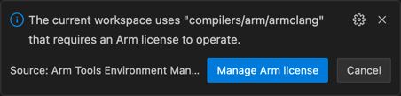
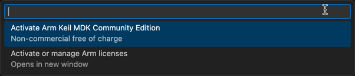

Installation
Prerequisites
Arm Keil Studio is a set of extensions for Microsoft Visual Studio Code, which is required to be installed on your machine.
Installing Keil Studio
The Arm Keil Studio Pack (MDK v6) extension pack includes the extensions that are required to work with CMSIS solution projects.
- In VS Code, open the Extensions view.
- Type
Armin the search bar. - Click on "Arm Keil Studio Pack" and README is shown on the right. It contains links to the included extensions. Their
READMEs include minimal user guides.

- Click Install to start. You need to trust the publishers "Arm" and "LLVM" to install the extension pack. When the installation is finished, the CMSIS view icon appears in the activity bar.
Verify the installation
Once you have installed Keil Studio, you can verify your installation by following the getting started guide that opens automatically:

It's best practice to create a new CMSIS solution based on a Blinky example, which typically flashes an LED on a target board.
Note
When creating a solution based on an example, all required tools and packs are installed automatically.
Set up a new workspace
If you want to install tools and packs separately, you have to create a new workspace in VS Code by opening a blank folder.
Tool installation
Required tools (such as a compiler toolchain or the CMSIS-Toolbox) are installed via the
Arm Tools Environment Manager, controlled by the vcpkg-configuration.json file.
Open the Arm Tools Environment Manager via the command pallette (Ctrl/Cmd + Shift + p) and select Arm Tools: Configure Arm Tools Environment. The "Arm Registry" opens:

Select at least an "Arm CMSIS-Toolbox" version as this is required to be able to install packs. The Output pane shows the status of the "Arm Tools" installation.
Attention
- If you are using Keil Studio for the first time, the Arm Tools Environment Manager needs to download required tools from the Internet. This may take a couple of minutes (depending on your internet connection).
- You also need to provide a license. A free, non-commercial MDK-Community license can be activated from within the tool. If you need a commercial license, check our eStore or contact your preferred distributor.
Pack installation
CMSIS-Packs for device and board support as well as software delivery mechanism are an integral part of a CMSIS solution. Packs can be discovered online:
Each page contains information about how to download a pack with cpackget:

Run this command in a Terminal (you will be asked to accept the license agreement):
❯ cpackget add Keil::MDK-Middleware@8.0.0
I: Updating public index
I: Downloading index.pidx...
I: 100% |█████████████████████████████████████████████████████████| (216/216 kB, 405 kB/s)
I: Updating PDSC files of public packs
I: Adding pack "Keil::MDK-Middleware@8.0.0"
I: Extracting files to /Users/chrsei01/.cache/arm/packs/Keil/MDK-Middleware/8.0.0...
I: 100% |█████████████████████████████████████████████████████████| (2180/2180, 2187 it/s)
Activating Keil Studio
Some of the Arm tools (for example Arm Compiler for Embedded and Arm Debugger) require activation. You will be flagged with a pop up window:

Click on "Manage Arm license" in the pop up. At the top, a new drop-down opens:

-
If you want to evaluate Keil Studio or use it for non-commercial development, select "Activate Arm Keil MDK Community Edition".
-
If you have a valid UBL server or activation code, use "Activate or manage Arm licenses" to activate Keil Studio.
Note
- Open-source tools, such as Arm GNU Toolchain and Arm CMSIS Debugger do not require activation.
- For more information visit the user-based licensing web page.
Configure the extension
Press Ctrl+, (Windows and Linux) or Cmd+, (macOS) or go to at the bottom of the Activity Bar and select Settings. Then, select CMSIS Solution to change the extension settings. The available settings are:
| Setting | Description |
|---|---|
| Auto Debug Launch | Create or update launch.json and tasks.json with the Debug Adapter configuration of the CMSIS solution project. |
| Download Packs | CMSIS-Toolbox downloads required software packs using cpackget during setup and project build. This option enables the option --packs for cbuild. |
| Environment Variables | Specify additional environment variables to be set for build, run, and terminals. |
| Exclude | Configure a glob pattern for excluding files and folders in searches for csolution files. |
| Experimental Features | Use the checkbox to enable experimental features. |
| Generate Clang Setup | Use the checkbox to automatically generate the required setup (.clangd file and .vscode/settings.json) for the active solution context. For Arm Compiler 6, include pre-defined macros in the .clangd file. |
| Output Directory | Enter an output directory prefix for 'outdir' and 'tmpdir' and relocated build information files (experimental). |
| Probe-ID | Specufy the unique identifier of a probe to be used for debugging. |
| Use Web Services | Use the checkbox to enable web services to obtain information about devices, boards, and examples. If enabled, information from the internet and locally installed packs is used. If disabled, only information from installed packs is used. |